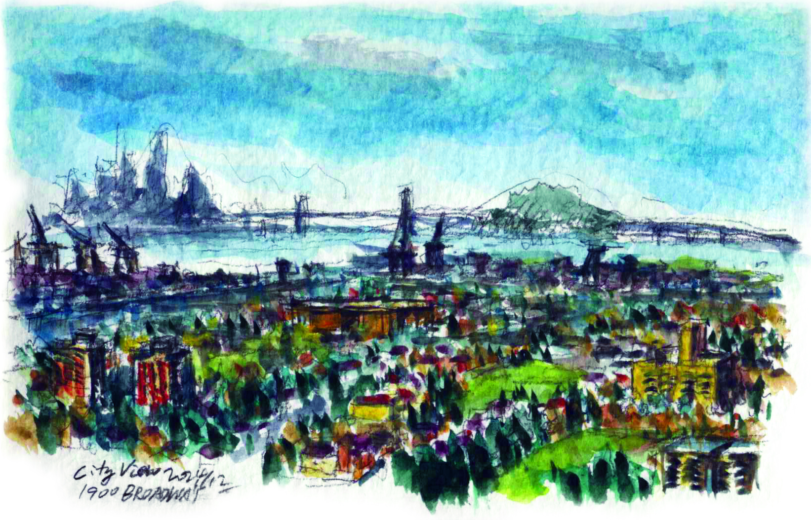

Oakland Sky View
Oakland's skyline emerges through morning fog, revealing the city's architectural diversity and natural beauty. The interplay of light and shadow across urban surfaces creates a constantly changing canvas. This elevated perspective showcases how the city nestles between bay waters and rolling hills.